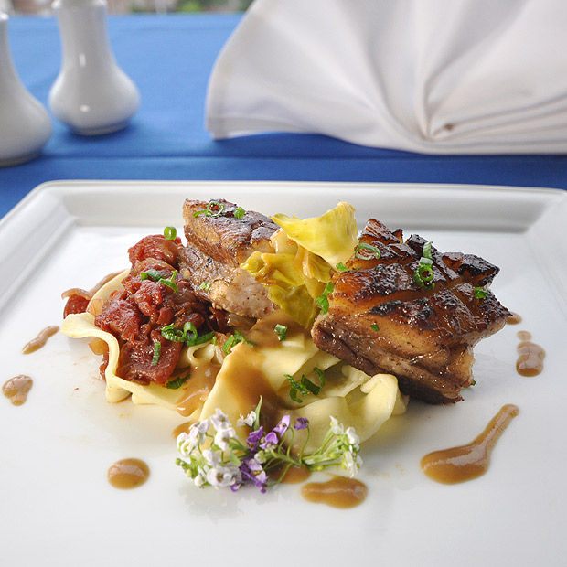

Author
JWU College of Culinary Arts
Minimum internal temperature
180°F-200°F
Yield
10 servings
Serving Size
7 ounces
Recipe ID
C00410
Beer-Braised Pork Belly
Ingredients
Dry Cure (to be completed in advance)
- Black peppercorns, toasted (3 tablespoons)
- Cloves, whole, toasted (½ tablespoon)
- Cinnamon sticks, toasted (2 each)
- Dark brown sugar (½ cup)
- Kosher salt (3 tablespoons)
- Pork belly, rinsed, dried, skin removed (4 pounds)
Braise
- Vegetable oil (As needed)
- Salt, Kosher (To taste)
- Black pepper, ground (To taste)
- Cured pork belly, rinsed, dried (4 pounds (from above))
- Spanish onions, peeled, chopped ½ inch (2 medium)
- Carrots, peeled, chopped ½ inch (3 medium)
- Celery stalks, chopped ½ inch (3 each)
- Bay leaf (2 each)
- Thyme sprigs (3 to 4 each)
- Malt beer (24 ounces)
- Gelatinous chicken or veal stock (reduced by 50%) (1 to 1 ½ quarts)
- Dijon mustard (3 tablespoons)
Preparation
- Gather all the ingredients and equipment.
- Preheat oven to 350°F (177°C).
- Dry cure: The dry cure must be done 2 days in advance. Crush the whole spices in a mortar and pestle or spice grinder. Combine with the brown sugar and salt. Season both sides of the pork. If additional spice mix is made, reserve for another day in an airtight container.
- Refrigerate pork, tightly wrapped, for no more than 2 days.
- Rinse the meat and wipe dry before braising.
- To braise the pork, lightly season the cured, dried pork with salt and pepper and sear in hot oil to a rich brown on both sides. Remove and hold.
- Reserve a small amount of fat in the pan and pour off excess. Sauté the mirepoix gently until softened and lightly caramelized. Add the bay leaf, thyme, and beer. Bring to a simmer and reduce by half. Return the pork to the pan and add enough stock to cover half way. Bring to a simmer and skim off any visible scum or fat. Cover with a tight lid and braise until fork tender in the oven, about 2 hours.
- Remove pork to a cutting board and allow to cool a little while the sauce is completed.
- Strain the sauce into a clean pan. Whisk in the mustard, skim if necessary, and reduce to a desired viscosity and flavor. Hold hot for service.
- To finish, cut pork into 10 to 12 even portions. Heat a sauté pan or braising pan and sear the meat again to crisp both surfaces.
- Serve immediately on a pool of sauce or hold hot at 135°F (57°C) or above.